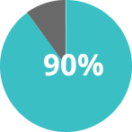
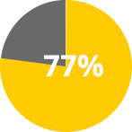
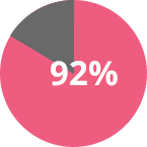

Overview
The Girls Who Code Summer Immersion Program is a 7-week intensive computer science course that embeds classrooms in technology companies and universities. Girls learn everything from robotics to mobile development to HTML and CSS while gaining exposure to the tech industry and receiving valuable mentorship from women working in technology.
Key programmatic components of the Girls Who Code Immersion Program include:
Skills – Seven weeks of intensive instruction in computer science, robotics, algorithms, web design, and mobile development
Exposure – Speakers, demos, workshops, and presentations from female engineers and entrepreneurs; field trips to technology companies, startups, academic institutions and more
Mentorship – Top female executives, entrepreneurs and engineers provide career and academic mentorship
Outcomes
In 2014, we served 375 girls across 19 programs in Boston, Miami, Seattle, New York City, and all over the Bay Area. (Up from 8 programs in NYC and Bay Area in 2013)
2014 Summer Immersion Program Outcomes
90% went on to major or minor in CS or closely related field

77% of girls changed paths because of Girls Who Code
92% of program participants taught someone else to code
FAQ
Common Questions
Q: I am going to be out of town during the Summer Immersion Program dates. Should I still apply?
A: All program participants must be able to commit to attending the entire 7-week program. We hope you’ll chose to spend your summer with us. It’s worth it!
Q: Where are the 2015 Girls Who Code Summer Immersion Programs located?
A: Girls Who Code currently has summer programs in: Boston, MA Chicago, IL Los Angeles, CA Miami, FL Mountain View, CA Newark, NJ New York, NY Palo Alto, CA San Francisco, CA San Jose, CA San Ramon, CA Seattle, WA Springfield, MA Washington, DC
Q: Who is eligible to apply for Girls Who Code Summer Immersion Programs?
A: Applicants must: Be current sophomores or juniors in high school. Possess a U.S. address. Commit to attending the full 7-week program in their respective location. The program runs Monday to Friday, 9am to 4pm daily. Commute to and from program every day. Girls Who Code will work with participants to coordinate transportation as needed. Transportation stipends will be provided to local students who have financial need. Housing and travel considerations for non-local students are not provided. WE VALUE A DIVERSE CLASSROOM AND STRONGLY ENCOURAGE APPLICATIONS FROM: Girls of all ethnic, racial, cultural, and socioeconomic backgrounds. The programs are free for all participants. Transportation stipends will be made available for students with limited financial resources.
Q: How do I apply to attend a Summer Immersion Program?
A: Our 2015 application is now closed, but please fill out this interest form to stay informed with any program updates!